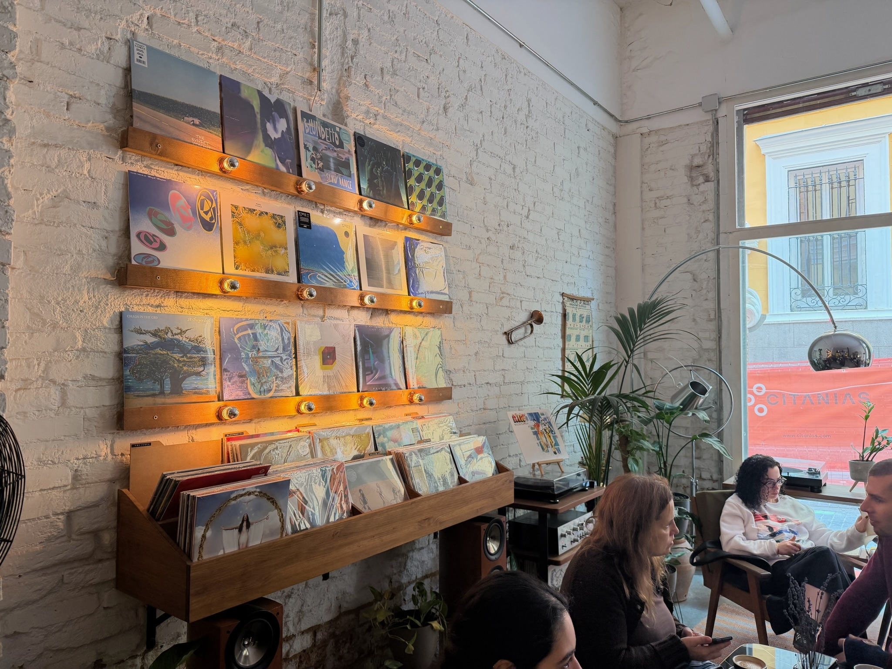

Exploring cafes from different cities and countries is a great way to experience the diversity of coffee culture. Each place offers its own take on flavors, atmosphere, and coffee beans. This shows how coffee reflects local culture. Trying coffee from different regions helps you appreciate this variety, and is an easy way to relax and enjoy a new place. Coffee is a shared experience among all cultures and traditions, and it is always fun to see how cafes set up their atmosphere.
